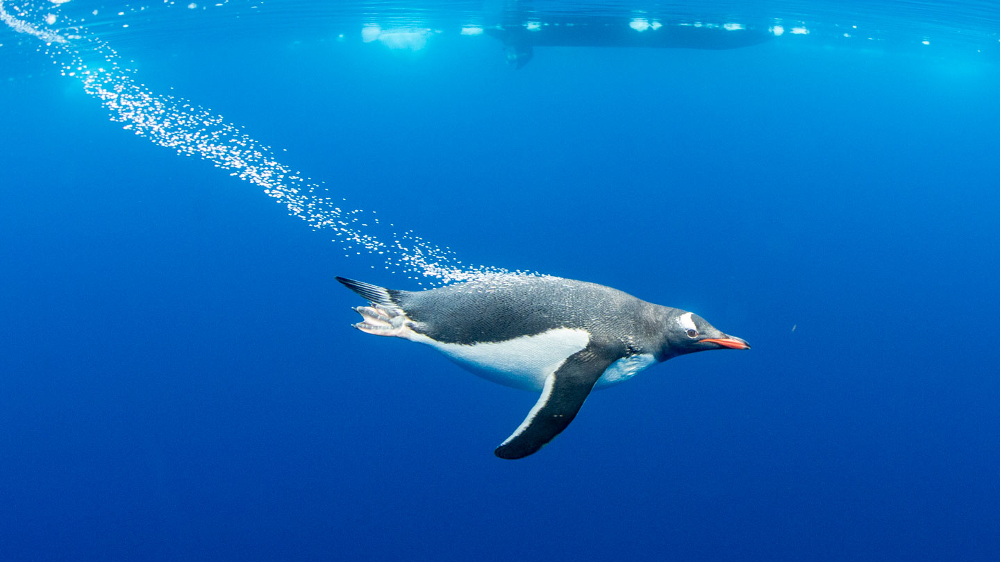

Ordnung: Sphenisciformes (einzige Familie in Ordnung)
Klasse: Vögel
Gewicht: bis zu 40kg
Größe: 45 cm bis ~ 1m

schwimmender pinguin
fakten
Pinguine sind sehr gute Schwimmer.
Die von Pinguinen durchschnittlich beim Schwimmen
erreichte Geschwindigkeit beträgt Messungen zufolge
etwa fünf bis zehn Kilometer pro Stunde, obwohl in
kurzzeitigen Sprints
auch höhere Geschwindigkeiten denkbar sind.
Pingine können delfinschwimmen. Dabei verlässt der Pinguin
wie ein Delfin sprungartig
jeweils kurzzeitig das Wasser.
Je nach Größe ernähren sich Pinguine von Fischen, häufig zum Beispiel vom Antarktischen Silberfisch (Pleuragramma antarctica), von Sardellen (Engraulidae) oder Sardinen (in Clupeidae),
von Krebstieren wie Krill oder kleinen Tintenfischen, die aktiv auf Sicht gejagt und noch unter Wasser verschluckt werden. Teilen sich unterschiedliche Arten denselben Lebensraum, so haben sie in der Regel unterschiedliche Nahrungsvorlieben: So verzehren Adelie-Pinguine und Zügelpinguine Krill unterschiedlicher Größe.